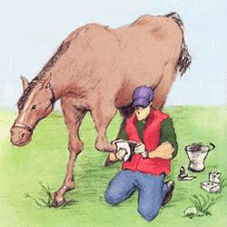
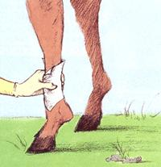
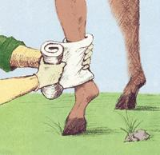
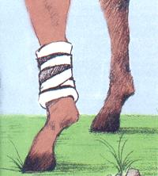

COUNTRY VET
Life-saving strategies every animal owner should know.
In many rural areas, folks can't count on 24-hour emergency veterinary care for livestock. Nevertheless, if you own animals, eventually you will have an emergency. What happens when you have a horse with a gaping wound, or a ewe trying to lamb, or maybe a cow that is stretched out flat, and your veterinarian is unavailable? The well-being -perhaps even the life-of your animals is now in your hands.
To stop uncontrolled bleeding from a severed vessel, follow these steps for applying a pressure bandage: clean the wound, apply an antiseptic, cover with a nonstick gauze pad, followed by roll cotton and Vet Wrap. A properly wrapped pressure bandage can stop an animal from bleeding out before the vet arrives.
While panic is likely your natural reaction, it's unlikely to produce positive, life-saving results. Not everyone has the wherewithal to stay calm in an emergency: however, you've a moral and a legal duty to try. Your animals rely on you for food, shelter, and, yes, a calm head when they are injured or sick.
In addition to your wound management kit, you should maintain a basic health kit for your farm. Most of the items you will need are readily available at local feed stores, through farm catalogs, or from sites an the Internet. Below is a list of items that I recommend my clients keep available:
+ a sturdy tool box
+ restraint equipment appropriate for the species
+ thermometer with a sting and alligator clip (The clip is attached at the base of the tail. It will prevent you from accidentally dropping the thermometer, helping you to avoid unpleasant fishing expeditions. Also, keep in mind that a quality digital thermometer is easier to read at night.)
+ a clean, preferably stainless-steel, bucket
+ hypodermic needles 16,18, and 20-gauge, 1 to 1.5 inches long (for vaccination & antibiotic therapy)
+ six 14-gauge, two-inch needles (for intravenous therapy for cattle)
+ IV simplex hose
+ syringes: 5cc, 12cc, and 60cc (Clean and energize syringes for reuse.)
+ obstetric chains and handles (obstetric lack optional)
+ neonatal resuscitator
+ stomach tube-size appropriate for species
+ neonatal esophageal feeder
+ a small refrigerator designated to maintain vaccines and antibiotics
+ a bright reliable flashlight
Did you ever ask yourself why veterinarians or other medical professionals don't panic in emergency situations? The answer is: They are prepared. You, too, can keep calm by arming yourself with knowledge and the right equipment.
Since one person's emergency may be another person's minor headache, it makes sense for us to begin by defining the term. Lets assume, for the purposes of this article, that an emergency is an event that, without proper intervention, will lead to loss of life, limb, or a major physiologic function within one hour.
An animal that is bleeding from a large vessel or cannot breathe would thus constitute an emergency.
Is a young calf with diarrhea an emergency? The calf may he facing future death from dehydration; however, under the parameters we've set forth, the calf does not constitute an emergency. Dehydration will take longer than one hour to set in and can be anticipated and avoided.
With the groundwork laid, let's work from some common scenarios. First emergency: blood loss. Your horse has just wrapped a barbed wire wound his lower leg. Bright red blood is spurting from the wound in slow regular intervals. Veterinary care is temporarily unavailable. This case is clearly an emergency and your horse is dependent on you to remain calm and be prepared to save both its life and limb.
The key here is being prepared. That means accumulating the proper equipment and keeping it readily available in a toolbox designated for wound management. At a minimum, your wound management kit should include:
betadine cleansing solution
latex gloves
an antiseptic cream (nolvasan- or nitrofurazone-base is preferred)
nonstick gauze pads
standard 4'x4"gauze pads
roll cotton
Vet Wrap
adhesive tape
Never forget that your animal's personality may change after an injury. An otherwise docile animal can become frightened and aggressive. Exercise caution and always work with a partner. A very wise surgeon once said, "All bleeding stops." Your goal is to stop the bleeding before shock sets in and life is lost.
A simple and fast way to stop uncontrolled bleeding is to apply manual pressure directly over the severed vessel. This is in fact the preferred method to control blood loss in anatomical regions where pressure wraps can't be applied. Be prepared to hold pressure on the injured vessel until surgery can be used to tie it off.
Manual pressure will also buy you some time to apply a pressure bandage, which should be done as follows: First, clean the wound with some betadine solution and apply a generous amount of antiseptic cream. Follow the antiseptic cream with a nonadherent gauze pad and a circumferential wrap of roll cotton, then apply Vet Wrap snugly around the roll cotton. Vet Wrap is the trade name of a self-adhering stretchable wrap that provides both pressure and support. Once in place, a properly wrapped pressure bandage can control bleeding for an extended period, facilitating patient transport or keeping the animal alive until your veterinarian arrives.
In the unfortunate event that an extremity is severed, you may need to apply a tourniquet. Be sure to apply it as close to the injury as possible, recognizing that all tissue below the tourniquet will be lost. A tourniquet should be reserved for those animals that we could humanely conceive of as living with three legs, or for whom we would elect to have fitted with a prosthesis. And yes, veterinary medicine does offer prosthetic legs for horses.
When a human chokes, the material generally lodges in the back of the throat, where the windpipe and the esophagus converge, and blocks the airway. (In such cases, the Heimlich maneuver, administered properly, will create enough reverse wind force to expel the material from the wind pipe.) In farm animals, on the other hand, choking on food doesn't usually lead to airway obstruction. Instead, the object will bypass the pharynx and lodge in the esophagus, where it will prevent a ruminant from belching excess gas. This will lead to bloat, which can be fatal in six to 12 hours if left untreated.
Gently passing a stomach tube will generally resolve bloat in cattle and small ruminants, as well as relieve most chokes in horses.
This is important, since in horses alfalfa cubes or a small apple lodged in the esophagus can cause irreversible damage. Pressure from the apple can injure the fragile muscle and nerve balance that allows the horse to swallow. A choked horse should be attended to immediately, though, in most such cases, death will not occur within one hour.
In those rare instances when a foreign object does obstruct the airway of a cow or horse, the Heimlich maneuver is unfortunately not an option. (A client once told me she performed it successfully on a goat-a feat I regret not witnessing.) Instead, I recommend trying to remove the material manually.
There are two drawbacks to this approach. The first is obvious: the animal may bite you. The second is not so obvious. Animals that have rabies will exhibit signs identical to a choked animal. Placing your hand in direct contact with the saliva of a rabid animal exposes you to rabies. Whenever I put my hand in an animal's mouth to relieve choke, I make sure to put something firm between its back molars (a block of wood works nicely in a pinch). Next, I don two plastic rectal sleeves, followed by latex surgical gloves, and dive in. If you keep a bright flashlight and some salad tongs handy, they might save your fingers from a painful crushing.
The more common airway obstructions are seen in neonatal animals, whose lungs and upper airways are prone to fill with fluid during the birthing process. When a child is born, one of the first things the obstetrician does is suction the upper airway to remove excess fluid. The same principle applies to farm animals. As a routine measure, I will hang or hold lambs, kids, and calves with their hind legs elevated while the fluid drains out. Occasionally, cardiopulmonary resuscitation (CPR) becomes necessary to jump-start a neonate.
Commercial devices are available that can aid in pulmonary resuscitation. It's a good idea to use these and to avoid mouth-to-mouth resuscitation, since there are bacteria in the fetal fluid known to cause disease in humans.
I perform the chest compression component of CPR in quadrupeds by placing the animal on its right side and pressing the left chest wall. Livestock delivered hind limbs first are at increased risk of aspirating fluid. Be prepared to assist these animals.
Other obstetrical emergencies can and do occur, and management of these cases may be the focus of a future article. For now, remember these few principles: Lubrication is the key to success. Add lubrication until you think you have enough and then double it.
Use minimal mechanical assistance. In calves, two strong people should be sufficient for most deliveries. Goat, sheep, and pig obstetricians need small hands and occasionally significant physical endurance.
While this article cannot begin to cover all of the emergencies that could occur, the good news is that the amount of information available to aid the farmer in aiding his animals is overwhelming. Textbooks, the Internet, and cooperative extensions are all good resources for educating yourself on animal health and emergency management. But your best resource is often your veterinarian. There are few things I enjoy more then sitting on the tailgate of my truck after a farm call and sharing what I know with an inquisitive client. The next time your veterinarian visits, have a couple of questions prepared. Veterinarians like to know that their opinions are valued and, schedule permitting, will take the time to answer your questions.
Work to cultivate a good relationship with your vet. He or she will likely be glad to help you increase your own knowledge of animal health, so that you can be prepared when emergency strikes.
Over-the-counter medications are available from feed stores and farm catalogs.
There are many cases where antibiotics are Useful for the treatment of animal disease; however, it is important to follow label directions. Take special note of the proper dose, the method for administering the drug, and the amount of time required for the animal to clear the antibiotic from the meat or milk. Below is a list of over-the-counter pharmaceuticals that when used according to the label, will aid in maintaining optimal animal health:
PENICILLIN G
LONG-ACTING TETRACYCLINE
ASPIRIN (PAIN RELIEF FEVER REDUCTION/
WOUND SPRAY & FLY REPELLENT SPRAY
OBSTETRICAL LUBRICATION
7% IODINE (NAVEL CORD CARE)
DEWORMERS
ELECTROLYTE PRODUCTS FOR ORAL REHYDRATION
Many of you may be advanced in your knowledge of animal health and are old experts at treating emergencies and common ailments in your farm animals. In many cases, you have an understanding of not only over-the-counter medications, but also prescription drugs. Once a veterinarian's confidence is gained, he or she may prescribe pharmaceuticals for your animals. By law, a veterinarian can only prescribe medicines when a valid client-patient relationship exists. This relationship is legally defined, and your veterinarian must operate within set parameters. The law's intent is to insure that potentially dangerous compounds are used in a safe manner. The details of these products are best left to a discussion between you and your personal veterinarian.
|
 ILLUSTRATION BY TOM KIM |
 |
 |
|
 |
|
|